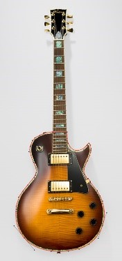
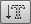

-
Pen tool
Photoshop provides a suite of vector path drawing tools that work in the same way as the pen path tools found in Adobe Illustrator and other programs that enable you to draw vector paths.
 Category: Drawing and Type Tools -
Freeform Pen tool
The freeform pen tool operates more or less exactly like the lasso tool. The main difference is that the freeform pen tool automatically evens out the rough edges as you draw an outline in order to produce a pen path that uses as few anchor points as possible.
Category: Drawing and Type Tools -
Add anchor tool
When the add anchor point tool is selected you can use it to click on a path segment to add a new anchor point to a path.
Category: Drawing and Type Tools -
Delete anchor tool
When the delete anchor point tool is selected you can use it to click on an existing anchor point to delete it.
Category: Drawing and Type Tools -
Convert point tool
When you draw a pen path, the pen tool will lay down what are known as smooth points.
Category: Drawing and Type Tools -
Horizontal type tool and vertical type tool
The type tool allows direct on-image text editing. The only difference between the horizontal and vertical type tools is that the horizontal type tool adds text horizontally and the vertical type tool adds text vertically.
Category: Drawing and Type Tools -
Horizontal type mask tool and Vertical type mask tool 
The horizontal type mask and vertical type mask tools offer the same level of typographic control as the standard type tools.
Category: Drawing and Type Tools -
Path Selection tool
Photoshop provides a suite of vector path drawing tools that work in the same way as the pen path tools found in Adobe Illustrator and other programs that enable you to draw vector paths.
Category: Drawing and Type Tools -
Shape tool

The shape tools allow you to add graphic shapes in the form of a filled layer with a vector mask, a solid fill, or as a path outline. Using the shape tools you can draw rectangular, rounded rectangular, elliptical, polygon, line or custom shapes.
Category: Drawing and Type Tools -
Rectangle shape tool

Category: Drawing and Type Tools -
Rounded rectangle shape tool
Category: Drawing and Type Tools -
Ellipse shape tool
Category: Drawing and Type Tools -
Polygon shape tool
Category: Drawing and Type Tools -
Line tool
Category: Drawing and Type Tools -
Custom shape tool
Category: Drawing and Type Tools -
Direct selection tool
Photoshop provides a suite of vector path drawing tools that work in the same way as the pen path tools found in other graphics programs, such as Adobe Illustrator.
Category: Drawing and Type Tools